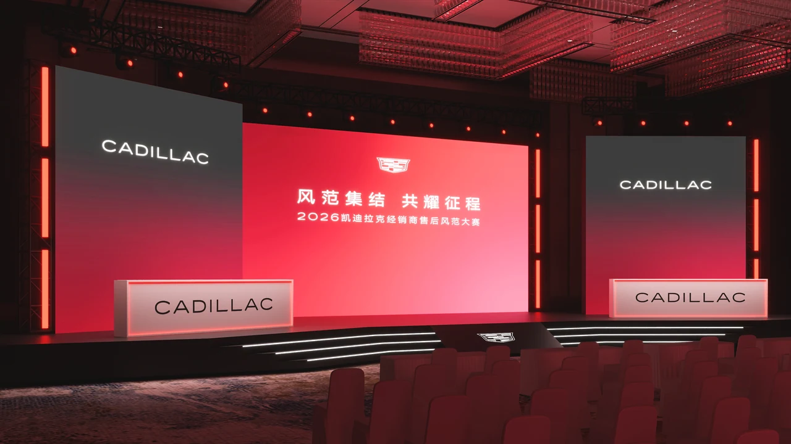
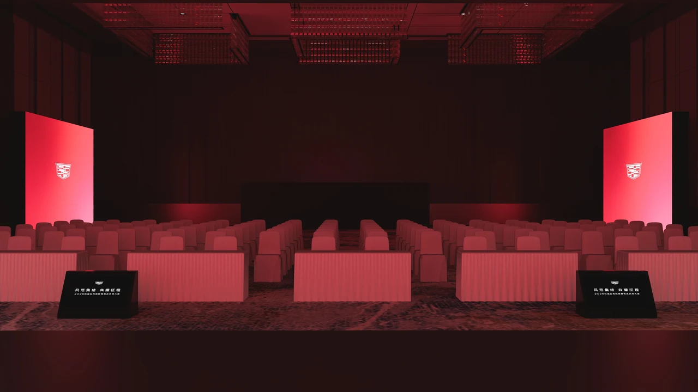

售后服务技能大赛
CADILLAC / BUICK · 舞台设计 · 2026
舞台方案涵盖凯迪拉克与别克主题、维修展示和两种会场布置。

舞台与观众席
观众席正面先读到居中的红色主屏，再看到两边框出的展项。切到侧视图，屏幕分区与座椅朝向同时可见。


红光擦过重复的椅背，座席之间仍留有清楚的暗部。会场成片也用深浅不同的红色区分座席，同时衬托亮屏。
Atai Anarbek · Pexels 许可屏幕内容
凯迪拉克、维修演示和别克三组画面的主信息都在中间。由红到蓝的配色切换，从观众席看仍保留中央画面与两侧内容的先后。


会场布置
从宴会视角看，圆桌留在主屏前方。舞台亮度集中在远处，前景桌面仍能读清。